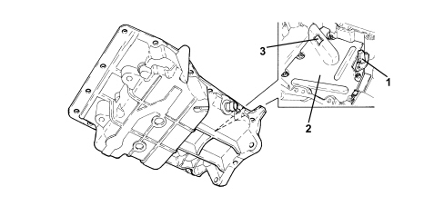

GENERAL REMARKS - CRANKCASE SUMP AND COVERS
- Path
- Descriptions > 10 ENGINE > 1020 CRANKCASE SUMP AND COVERS > GENERAL REMARKS - CRANKCASE SUMP AND COVERS
- Kind
- system description
- Applies to
- engines: 2.2; all production periods
- Interactive page
- https://sloeber94.github.io/elrnDB-fCrm/en/#/194002107
Applies to: engines: 2.2; all production periods
SPECIFICATIONS
The oil sump is in aluminium alloy and contains special partitions that prevent the engine oil slopping around too much when the pump could end up drawing in air.
The oil level and temperature sensor keeps the level and the temperature of the oil lubricant oil inside the sump in check.
This sensor is connected to a coupling which interfaces with the Instrument Panel Node (NQS).

1. Oil level and temperature sensor
2. Anti-banging partition
3. Oil intake pipe